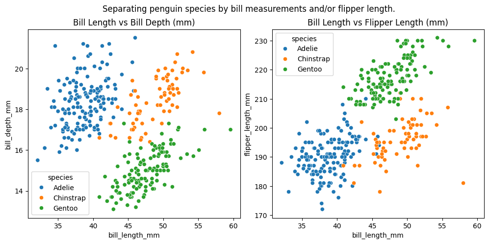
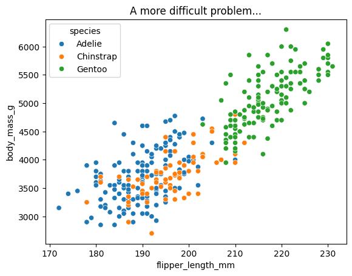
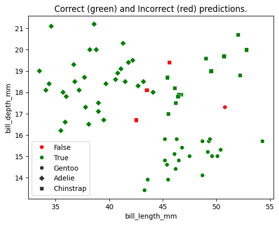
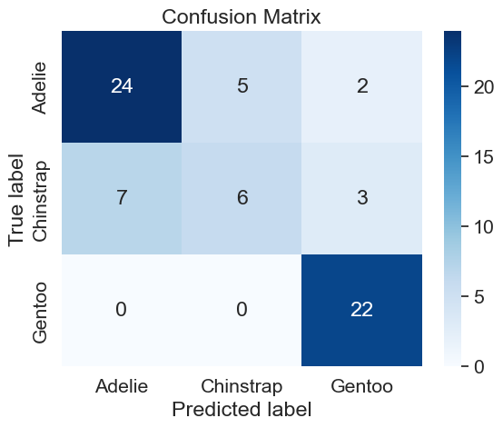
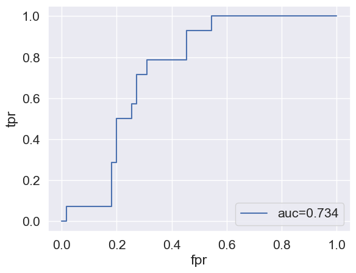
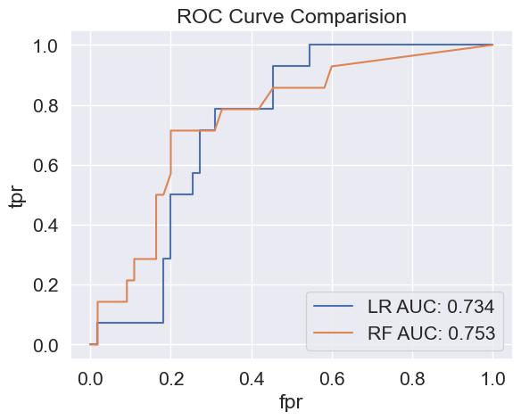

import matplotlib.pyplot as plt
import numpy as np
import pandas as pd
import seaborn as sns
from sklearn.ensemble import RandomForestClassifier
from sklearn.linear_model import LogisticRegression
from sklearn.metrics import accuracy_score
from sklearn.metrics import balanced_accuracy_score
from sklearn.metrics import classification_report
from sklearn.metrics import confusion_matrix
from sklearn.metrics import roc_auc_score, roc_curve
from sklearn.model_selection import cross_val_score
from sklearn.model_selection import train_test_split
from sklearn.preprocessing import OneHotEncoder 
Classification in Python (Intermediate)
ASRI 2026


The notebook uses the following modules:
matplotlib: Provides basic graphing/charting.numpy: Allows matrix and vector/array math.pandas: Provides DataFrame functionality.seaborn: Works withmatplotlibto provide nicer graphs.sklearn: Scikit-Learn provides machine learning and data manipulation tools.
We will rely heavily on the Scikit-Learn library for models, metrics, and experimental design tools. See the full documentation for this fantastic library at https://scikit-learn.org.
First, some terms and definitions:
Classification is the process of determining a categorical label given the random variables for a given sample.
Categorical values are allowed to take on only a finite (usually small) set of values. Categorical variables are usually non-numeric, but are sometimes encoded as numbers. Sometimes we refer to values of this type as labels, factors, or classes.
Continuous values are numeric values that are allowed to take on any value within some range.
A sample consists of all of the experimental information gathered for one item in the dataset. Sometimes a sample is called an object or item. Usually samples are arranged as rows in tabular datasets (CSV files, Excel spreadsheets, or similar).
A random variable, sometimes called an input variable, measurement, or feature, is the recorded value for some property of the sample that was measured in the experiment, e.g. “height”, “age”, “flower color”, etc.
You have a classification problem if the dependent variable (output value) you are trying to predict is categorical.
We will focus first on classification problems where the random variables are continuous.
At the end, a section is provided with some tips for working with random variables that are categorical.
Let’s see some code!
First, we have to import the modules, objects, and functions we will be using in this tutorial:
The Dataset
ℹ️ The seaborn package has some sample datasets included.
For this tutorial, we will use the “Palmer Penguins” dataset, which is called penguins in the Seaborn index. We can load it with the load_dataset() function. It will load up as a Pandas DataFrame.
penguins = sns.load_dataset("penguins")
penguins.head()| species | island | bill_length_mm | bill_depth_mm | flipper_length_mm | body_mass_g | sex | |
|---|---|---|---|---|---|---|---|
| 0 | Adelie | Torgersen | 39.1 | 18.7 | 181.0 | 3750.0 | Male |
| 1 | Adelie | Torgersen | 39.5 | 17.4 | 186.0 | 3800.0 | Female |
| 2 | Adelie | Torgersen | 40.3 | 18.0 | 195.0 | 3250.0 | Female |
| 3 | Adelie | Torgersen | NaN | NaN | NaN | NaN | NaN |
| 4 | Adelie | Torgersen | 36.7 | 19.3 | 193.0 | 3450.0 | Female |
The species column contains the value that we want to predict (it is our label column). Although we could use all the other columns as random variables (predictors), we will only focus on the numeric values for this part of the tutorial.
It will make things easier if we create variables to contain the name of the label column and the random variables. These can be used when we interact with Pandas DataFrames to quickly select those columns by name. This way, we don’t have to type the list of names often, and we don’t have to create a different data structure that only contains our variables of interest (although you could also do it that way).
label_col = "species"
random_var_cols = [
"bill_length_mm",
"bill_depth_mm",
"flipper_length_mm",
"body_mass_g",
]Let’s use the info() DataFrame method to see what kinds of values we have, and whether there are any missing values.
penguins.info()<class 'pandas.core.frame.DataFrame'>
RangeIndex: 344 entries, 0 to 343
Data columns (total 7 columns):
# Column Non-Null Count Dtype
--- ------ -------------- -----
0 species 344 non-null object
1 island 344 non-null object
2 bill_length_mm 342 non-null float64
3 bill_depth_mm 342 non-null float64
4 flipper_length_mm 342 non-null float64
5 body_mass_g 342 non-null float64
6 sex 333 non-null object
dtypes: float64(4), object(3)
memory usage: 18.9+ KBNotice that there are some missing values. We care most about the numeric columns for this example, so we want to drop any rows with missing values in those columns.
The dropna() method can do this. The subset parameter lets us specify which columns we care about (the random variables we specified earlier). We use axis=0 to indicate that we want to drop rows, not columns.
penguins = penguins.dropna(subset=random_var_cols, axis=0)ℹ️ dropna() is the simplest option and works when only a few rows are missing values. On messier datasets, dropping rows can throw away a lot of data. The alternative is imputation — filling missing values with a sensible substitute (mean, median, most-frequent value). Scikit-Learn’s SimpleImputer is the standard tool for that. For this workshop we keep things simple and drop the offending rows.
📊 Visualize Early, Visualize Often
Let’s take a look at the dataset. We will plot two different ‘views’ for comparison. the first will compare bill length with bill depth, and the second will compare bill length with flipper length.
We can color the datapoints according to species so that we can visually see how separable the different classes might be.
# create a figure and two subplots
fig, (ax1, ax2) = plt.subplots(ncols=2, figsize=(12, 5))
plt.suptitle("Separating penguin species by bill measurements and/or flipper length.")
# create first scatterplot using Seaborn
sns.scatterplot(
data=penguins, x="bill_length_mm", y="bill_depth_mm", hue="species", ax=ax1
)
ax1.set_title("Bill Length vs Bill Depth (mm)")
# create second scatterplot just like the first, but with different columns
sns.scatterplot(
data=penguins, x="bill_length_mm", y="flipper_length_mm", hue="species", ax=ax2
)
ax2.set_title("Bill Length vs Flipper Length (mm)")
# adjust spacing between subplots
plt.subplots_adjust(wspace=0.15)
# show the plots
plt.show()
If we look at these plots, it seems we can probably do a pretty good job of separating the three classes. We see that you could even get pretty good performance by drawing a few lines to separate the groups (in other words, a simple linear model might work reasonably well).
To see what a harder classification problem might look like, let’s draw another scatterplot where we compare the flipper length and the body mass:
sns.scatterplot(data=penguins, x="flipper_length_mm", y="body_mass_g", hue="species")
plt.title("A more difficult problem...")
plt.show()
In this plot, it is very hard to see how we could separate the “Adelie” group from the “Chinstrap” group. There is even some mixing between the “Chinstrap” and “Gentoo” groups.
⚖️ Choosing the right random variables for prediction is vital. This is why it is a good idea to get to know your dataset early in the process! Visualize early, visualize often!
Let’s see how well we can classify with a linear model.
First, we examine the LogisticRegression model (which is actually a classification model – don’t let the name fool you).
Based on the graphs we plotted above, let’s use the bill length and depth as our random variables. (ℹ️ : We could absolutely use all four random variables and it would probably do better, but using just two gives us a chance to discuss the performance with a very simple model.)
random_var_cols = [
"bill_length_mm",
"bill_depth_mm",
]To quickly determine if it will be suitable to this problem, we can use the cross_val_score() function from Scikit-Learn. This function wraps up a lot of functionality. It will set up a k-fold cross validation experiment (with default of \(k=5\), for five-fold CV). It will take the model of your choice and automatically train the model for each training fold, then predict the test cases and score the predictions on the test folds (with the accuracy metric by default).
The scores for each fold are returned. We can calculate and report the mean score over all five folds along with the standard deviation of the scores to see whether the model is able to do a good job in general, and how much variation we would expect for different training sets. Models should have high accuracy, and a low standard deviation would indicate that the model generalizes to new data very well. (A high standard deviation would indicate the model is unstable and doesn’t generalize well.)
💡 Watch Out: Why scale your features? Many models (Logistic Regression, SVM, KNN, neural nets) are sensitive to the scale of input variables. In the penguin dataset, body mass is in the thousands of grams while bill length is in the tens of millimeters. Without scaling, the model’s math is dominated by the large-magnitude variable, and tiny changes in mass can look more “important” than huge changes in bill shape.
Rule of thumb: if the model relies on distances, gradients, or regularization, scale features first (e.g. with
StandardScaler). Tree-based models such as Random Forests are scale-independent and tolerate unscaled data just fine.We’ll demonstrate the correct way to scale below, after we have a train/test split — fitting the scaler on the full dataset before splitting is a common silent mistake.
scores = cross_val_score(
LogisticRegression(max_iter=500), X=penguins[random_var_cols], y=penguins[label_col]
)
print(
f"mean: {scores.mean():0.3f}, std: {scores.std():0.3f}"
) # print mean and standard deviationmean: 0.962, std: 0.020🎉 Wow! The linear model does a really good job on this problem!
OK, that isn’t really surprising since we looked at the data first and we could see that some combinations of our random variables provided good linear separation between the groups. Still, it’s nice to see our intuition was correct.
Let’s take a look at a different kind of model, just for comparison. A Random Forest model is a non-linear model that works well for lots of tasks. Scikit-Learn provides one called RandomForestClassifier.
Let’s try it in exactly the same experimental setup we used for the linear model.
scores = cross_val_score(
RandomForestClassifier(random_state=1),
X=penguins[random_var_cols],
y=penguins[label_col],
)
print(f"mean: {scores.mean():0.3f}, std: {scores.std():0.3f}")mean: 0.968, std: 0.017Here, the random forest did about the same as the linear model (especially if we take the standard deviations of scores into account).
If we wanted to pick between these two models for this problem, we should probably choose the simpler one – the logistic regression model.
💡 The Principle of Parsimony says that given the choice between multiple models with similar performance, the best choice is usually the simplest model.
ℹ️ One note:
We used random_state=1 to seed the random number generator within the model, causing it to produce identical results if we train it again on the same data. Random forests (as implied by their name) rely on some randomness during training, so you don’t expect to get the same performance every time. This makes reproducible results difficult.
By seeding the random state, we “lock” it to a specific outcome (assuming no external changes). This way, others can reproduce our results in the future.
Exploring more ways to characterize classifier performance.
📊 Visualize!
When the model is making incorrect predictions, sometimes we want to know which samples the model predicts incorrectly. This can help us diagnose whether the model is doing the best it can, whether the model is doing strange things, or even whether there might be a problem with the dataset itself.
Generally, a good starting point to diagnosing the mis-predicted values from a model is for us to visualize them in some way. Since this problem is easy to visualize as a 2-D scatterplot, we will use that as a way to see which samples the model is getting right vs. wrong.
To start, let’s just split the dataset into a simple 80% / 20% train / test split. That means that we will reserve 20% of the samples for the test set, and the other 80% will be used for training. Scikit-Learn has a simple function for doing this (train_test_split()).
The function returns a training and testing dataframe (or matrix) given the original full dataset and the fraction you want to hold out for the test set.
train_df, test_df = train_test_split(penguins, test_size=0.20, random_state=2)Scaling features the right way (and avoiding data leakage)
Now that we have a train/test split, we can scale features. Critical rule: fit the scaler on the training data only, then use that same fitted scaler to transform both train and test. If you fit on the full dataset before splitting, information from the test set “leaks” into training — your test scores will look better than they really are, and the model will under-perform on truly unseen data. This is one of the most common silent mistakes in applied ML.
from sklearn.preprocessing import StandardScaler
scaler = StandardScaler()
# Fit on TRAIN ONLY, then transform train.
X_train_scaled = scaler.fit_transform(train_df[random_var_cols])
# Apply the SAME fitted scaler to test -- do NOT re-fit.
X_test_scaled = scaler.transform(test_df[random_var_cols])💡 A cleaner alternative:
PipelineThe manual two-step (
fit_transformon train,transformon test) makes the leakage rule visible, which is why we showed it first. Scikit-Learn also provides aPipelinethat bundles preprocessing and the model into a single object — calling.fit()on the pipeline automatically fits the scaler on training data only, and.predict()automatically transforms before predicting. There is no way to accidentally leak.from sklearn.pipeline import Pipeline from sklearn.preprocessing import StandardScaler pipe = Pipeline([ ("scaler", StandardScaler()), ("model", LogisticRegression(max_iter=500)), ]) pipe.fit(train_df[random_var_cols], train_df[label_col]) pipe.predict(test_df[random_var_cols])A pipeline also plugs directly into
cross_val_scoreandGridSearchCVso the scaler is re-fit on each CV fold — exactly what you want. We use this same pattern in the companion Regression workshop.
We’ll use the LogisticRegression model again, training it on the “train” partition (using the fit() method). Then, we’ll predict the “test” samples and calculate the (balanced) accuracy score.
model = LogisticRegression(max_iter=500).fit(X=X_train_scaled, y=train_df[label_col])
preds = model.predict(X_test_scaled)
ground_truth = test_df[label_col]
print(f"Test balanced accuracy: {balanced_accuracy_score(ground_truth, preds):0.3f}")
# Compare training-set vs. test-set performance to see the "overfitting gap".
train_preds = model.predict(X_train_scaled)
train_acc = balanced_accuracy_score(train_df[label_col], train_preds)
test_acc = balanced_accuracy_score(ground_truth, preds)
print(f"Train: {train_acc:0.3f} | Test: {test_acc:0.3f}")Test balanced accuracy: 0.922
Train: 0.943 | Test: 0.922💡 The Overfitting Gap. A model usually does a little better on data it was trained on than on data it has never seen. The difference between the train and test scores is the overfitting gap. A small gap is normal. A large gap (e.g. train 0.99, test 0.70) means the model is memorizing the training examples rather than learning the general pattern — it will not generalize to new data.
Now, let’s create the scatterplot that will show which samples were predicted incorrectly.
We can use color to indicate correct (green) and incorrect (red) predictions. We will also use different marker shapes to indicate the true class label so that we can see which ones are being predicted incorrectly and get a sense for why.
plt.figure()
fig = sns.scatterplot(
data=test_df,
x="bill_length_mm",
y="bill_depth_mm",
hue=(preds == ground_truth),
style=list(test_df[label_col].values),
markers=["o", "D", "s"],
palette={True: "green", False: "red"},
)
fig.legend() # weird kludge: The "species" title is shown by default, but just calling `legend()` removes it. Why? 🤷
plt.title("Correct (green) and Incorrect (red) predictions.")
print(test_df[label_col].unique())['Gentoo' 'Adelie' 'Chinstrap']
The green dots are samples that were correctly predicted and the red dots are incorrect predictions. There are only four incorrect predictions. Three of those are near the “border” between the two visual “clusters”. That makes sense – class mixing obviously occurs here. The other one is a Gentoo penguin that was incorrectly predicted (probably as a Chinstrap, since there are Chinstrap penguins nearby).
At this point, we will make the problem harder. Why? Well, it will be more interesting to explore correct / incorrect predictions if the model is not quite so good.
The flipper length and body mass do not combine to give very good separation, so we will choose those as our random variables from this point forward.
🤔 Of course, we would never choose worse predictors in any real analysis, but doing this can be useful as a learning exercise.
random_var_cols = ["flipper_length_mm", "body_mass_g"]Let’s see how our new random variables perform with the same linear model as before:
scores = cross_val_score(
LogisticRegression(max_iter=500), X=penguins[random_var_cols], y=penguins[label_col]
)
print(f"mean: {scores.mean():0.3f}, std: {scores.std():0.3f}")mean: 0.801, std: 0.027Somewhat worse performance! 😦 That’s what we expected though, with the less useful features. And it is more interesting for exploring the performance metrics.
Let’s see how the Random Forest does in this scenario:
scores = cross_val_score(
RandomForestClassifier(random_state=1),
X=penguins[random_var_cols],
y=penguins[label_col],
)
print(f"mean: {scores.mean():0.3f}, std: {scores.std():0.3f}")mean: 0.772, std: 0.041The Random Forest didn’t help here — if anything it did slightly worse than the linear model on these two features.
That might be surprising at first: Random forests can fit non-linear decision boundaries, so shouldn’t they do better when the classes aren’t linearly separable? The catch is that a non-linear model only helps when there is a non-linear pattern to find. Looking back at the flipper_length_mm vs body_mass_g scatterplot, Adelie and Chinstrap penguins are nearly indistinguishable on these two axes. Since the classes genuinely overlap, no model, can separate them perfectly.
💡 The lesson: when performance is poor, the first question to ask isn’t “should I try a fancier model?” — it’s “do my features actually contain the signal?” The old saying is “Garbage in, garbage out”.
We’ll keep using these weaker features below so we have something interesting to diagnose with the performance metrics.
Which variables actually mattered?
Reviewers (and your own future self) will always ask: which features carried the most weight? Random forests expose this directly via feature_importances_. The values are non-negative and sum to 1 — bigger means “this feature was more useful for splitting the data.”
# Use all four numeric features to get a more informative importance ranking.
importance_features = ["bill_length_mm", "bill_depth_mm", "flipper_length_mm", "body_mass_g"]
rf = RandomForestClassifier(random_state=1).fit(penguins[importance_features], penguins[label_col])
pd.Series(rf.feature_importances_, index=importance_features).sort_values(ascending=False)bill_length_mm 0.413308
flipper_length_mm 0.329566
bill_depth_mm 0.176707
body_mass_g 0.080419
dtype: float64We will use our simple 80%/20% train/test split from earlier and train the linear model using the new (worse) combination of random variables.
First, train the model:
model = LogisticRegression(max_iter=500).fit(
X=train_df[random_var_cols], y=train_df[label_col]
)
preds = model.predict(test_df[random_var_cols])
ground_truth = test_df[label_col]
print(f"{balanced_accuracy_score(ground_truth, preds):0.3f}")0.716
Confusion Matrix
Now, we can use another visualization technique to discuss the performance characteristics. This technique is called a confusion matrix. It shows the number of samples from each true label that were predicted as each possible output label. Seaborn makes very nice confusion matrix plots.
cm = confusion_matrix(ground_truth, preds)
# plot the confusion matrix using seaborn heatmap
sns.set(font_scale=1.4) # adjust font size
labels = model.classes_
sns.heatmap(
cm, annot=True, fmt="g", cmap="Blues", xticklabels=labels, yticklabels=labels
)
# add axis labels and title
plt.xlabel("Predicted label")
plt.ylabel("True label")
plt.title("Confusion Matrix")
# show the plot
plt.show()
Correct predictions appear along the diagonal (upper-left to lower-right). All of the other squares represent incorrect predictions.
Here, the linear model did very well with predicting Gentoo penguins when it saw a real Gentoo. But it also incorrectly guessed that 3 Chinstraps and 2 Adelies were Gentoos as well (False Positives).
As for the Chinstraps, we correctly classified 6 of them, but we incorrectly labeled 7 Chinstraps as Adelie and 3 as Gentoo (False Negatives).
Non-visual metrics
Let’s look at other classification metrics.
Scikit-Learn provides several metrics appropriate for evaluating classification models. You can see the list at https://scikit-learn.org/stable/modules/model_evaluation.html#classification-metrics.
We will start with the classification_report() function, which combines several popular metrics into a single report.
# We get precision, recall, and f1-score from the classification report.
# You can also get these individually from functions in sklearn.metrics.
print(classification_report(ground_truth, preds)) precision recall f1-score support
Adelie 0.77 0.77 0.77 31
Chinstrap 0.55 0.38 0.44 16
Gentoo 0.81 1.00 0.90 22
accuracy 0.75 69
macro avg 0.71 0.72 0.71 69
weighted avg 0.73 0.75 0.74 69
🧭 Choosing a model
A short reference for choosing a model for your own data:
- Logistic Regression (
LogisticRegression) — simple, fast, interpretable coefficients, clean probability outputs. Best when classes are roughly linearly separable. Requires feature scaling. Sensitive to outliers. - Random Forest (
RandomForestClassifier) — handles non-linear boundaries, tolerates unscaled features and mixed types, robust to outliers and noisy features. Less directly interpretable, and can overfit small datasets if the trees are allowed to grow too deep. - Gradient-Boosted Decision Trees (
HistGradientBoostingClassifier, or libraries likeXGBoost/LightGBM) — often the strongest off-the-shelf performer on tabular data. Builds trees sequentially, each correcting the previous one’s errors. Shares the random forest’s robustness to feature scale and mixed types, and adds extra accuracy at the cost of more hyperparameters to tune (learning rate, tree depth, number of trees) and slightly more risk of overfitting. Reach for these when you need the best possible performance, simpler models aren’t working well, and you have enough data to tune them. - Support Vector Classifier (
SVC) — finds the maximum-margin separator between classes. With the default RBF kernel it handles non-linear boundaries elegantly and tends to do well on small-to-medium datasets with clean features. Requires feature scaling and is sensitive to itsCandgammahyperparameters. SVC is best when you have a relatively small dataset and don’t want the complexity of boosting. - Baseline (
DummyClassifier) — always compare against a trivial baseline (e.g. “always predict the majority class”) to confirm your real model is actually learning something, rather than coasting on class imbalance.
ℹ️ When several models perform about the same, prefer the simpler one (the Principle of Parsimony).
What about binary classification?
So far, we’ve been performing multi-class classification: There were three possible classes {Adelie, Chinstrap, Gentoo}, and each sample could only be a member of a single class.
Many classification problems can be expressed as binary classification problems. That just means that there are two classes (and all samples must be one or the other, but not both).
Some metrics make sense with binary problems, but not with multi-class problems. Let’s change our dataset to make it into a binary classification problem. To do this, we will simply change classification to answer the question “Chinstrap or not?”. So, our new labels will be {Chinstrap, Other}. To do this, we will make a copy of our dataset and modify the species column to reflect the binary labeling.
💡 Watch Out: Accuracy can lie on imbalanced data. In the binary dataset below, Chinstraps are only about 20% of the samples; “Other” is 80%. A dummy model that always predicts “Other” would score 80% accuracy while being useless for finding Chinstraps. Two defenses: 1. Pass
stratify=ytotrain_test_splitso both partitions keep the original class proportions. (The code below will do this.) 2. Score with balanced accuracy, F1, or precision/recall instead of plain accuracy.Many scikit-learn estimators also accept
class_weight='balanced', which up-weights the minority class during training. This is useful when the imbalance is severe.
# Make a binary dataset by splitting the "Adelie" and "Gentoo" penguins
# away from the "Chinstrap" penguins.
binary_penguins = penguins.copy()
binary_penguins.loc[binary_penguins["species"] != "Chinstrap", "species"] = "Other"
# Name the positive class explicitly. We will reuse this everywhere we need
# to ask "which column / which label corresponds to the positive class?".
pos_label = "Chinstrap"
# Create new train/test split with the new dataset. (80%/20% as before)
b_train_df, b_test_df = train_test_split(
binary_penguins, test_size=0.20, random_state=2, stratify=binary_penguins["species"]
)
# Fit a linear model to the new dataset
model = LogisticRegression(max_iter=500).fit(
X=b_train_df[random_var_cols], y=b_train_df[label_col]
)
# And predict on the test set.
preds = model.predict(b_test_df[random_var_cols])
ground_truth = b_test_df[label_col]
print(f"Acc: {accuracy_score(ground_truth, preds):0.3f}")
print(classification_report(ground_truth, preds))Acc: 0.783
precision recall f1-score support
Chinstrap 0.33 0.07 0.12 14
Other 0.80 0.96 0.88 55
accuracy 0.78 69
macro avg 0.57 0.52 0.50 69
weighted avg 0.71 0.78 0.72 69
We can see that the binary accuracy is about 78%.
Receiver Operating Characteristic (ROC) Curve and Area Under the ROC Curve (AUC)
A common way of comparing binary classifier is by visually interpreting a performance curve called the Receiver Operating Characteristic (ROC) curve, or by numerically interpreting the area under the ROC curve (AUC or AUROC).
To create an ROC curve, we need to predict the probability that each sample belongs to the “positive” class. In Scikit-Learn compatible models, you can use the predict_proba() method to do this.
# Same model we already fit above -- now ask it for class *probabilities*
# rather than hard class predictions.
probas = model.predict_proba(b_test_df[random_var_cols])predict_proba returns a probability for each class — one column per class. The columns are ordered to match model.classes_, so the idiomatic way to grab the column for the positive class is to look it up by label rather than guessing an index:
pos_col = list(model.classes_).index(pos_label) # "Chinstrap" -> column index
probas_pos = probas[:, pos_col]⚠️ Watch Out: don’t hard-code
probas[:, 0]orprobas[:, 1]. You will see older examples that slice a fixed column. That happens to work only because of the alphabetical ordering of the class labels in that particular dataset. On a dataset where the positive class is alphabetically later (e.g.'Spam'vs.'Ham'), the hard-coded index silently selects the negative class and your ROC curve will appear inverted (AUC < 0.5). Looking the column up by name frommodel.classes_is the robust, transferable pattern — it works regardless of how the labels are encoded (strings, 0/1, booleans) or what order they happen to fall in.Scikit-Learn’s own ROC / precision-recall functions accept the same idea via a
pos_label=argument, which we’ll use below.
pos_col = list(model.classes_).index(pos_label) # "Chinstrap" -> column index
probas_pos = probas[:, pos_col] # probability of the positive classFor the ground truth we can keep the original string labels ("Chinstrap" / "Other") — scikit-learn’s ROC functions accept string labels as long as we tell them which one is positive via pos_label=:
ground_truth = b_test_df[label_col]The ROC curve plots the True-Positive Rate (tpr) against the False-Positive Rate (fpr) given all possible thresholds (from 0.0 to 1.0). The roc_auc_score() function from Scikit-Learn can compute the tpr and fpr scores for us, given the ground truth and predicted probabilities:
fpr, tpr, _ = roc_curve(ground_truth, probas_pos, pos_label=pos_label)And the roc_auc_score() will calculate the area under the ROC curve, given the same information:
# roc_auc_score needs a 0/1 (or boolean) target -- compare against pos_label
# to get that without having to maintain a separate encoded column.
auc = roc_auc_score(ground_truth == pos_label, probas_pos)Now, let’s plot the ROC curve and display the AUC in the legend using Matplotlib:
plt.plot(fpr, tpr, label=f"auc={auc:0.3f}")
plt.xlabel("fpr")
plt.ylabel("tpr")
plt.legend(loc=4)
plt.show()
Since we might want to compare multiple models on the same figure, let’s make a function that will take a dictionary of the form {name: model} of models, the training and testing samples and labels, and plot the ROC curve for all models:
# plots multiple models on the same ROC plot and compare them visually:
def multi_auc_comparison(models, X_train, y_train, X_test, y_test, pos_label):
for name in models:
model = models[name]
model.fit(X_train, y_train)
# Look up the positive-class column by name -- robust to label ordering.
pos_col = list(model.classes_).index(pos_label)
probas_pos = model.predict_proba(X_test)[:, pos_col]
fpr, tpr, _ = roc_curve(y_test, probas_pos, pos_label=pos_label)
auc = roc_auc_score(y_test == pos_label, probas_pos)
plt.plot(fpr, tpr, label=f"{name} AUC: {auc:0.3f}")
plt.xlabel("fpr")
plt.ylabel("tpr")
plt.title("ROC Curve Comparision")
plt.legend(loc=4)
plt.show()Let’s see it in action by comparing the linear logistic regression model to the random forest model:
multi_auc_comparison(
{
"LR": LogisticRegression(max_iter=500),
"RF": RandomForestClassifier(random_state=1),
},
b_train_df[random_var_cols],
b_train_df[label_col],
b_test_df[random_var_cols],
ground_truth,
pos_label=pos_label,
)
Generally, the higher AUC is better, but we can see from the ROC curve plot that there is some tradeoff in the performance characteristics (tradeoff between false positives and false negatives).
Working with categorical features
So far, we only used numeric features for our predictors. But, the Palmer Penguins dataset also contains some categorical features:
island- three levels: [‘Biscoe’, ‘Dream’, ‘Torgersen’]sex- two levels [‘Male’, ‘Female’]
Binary variables (with only two levels) can be re-encoded as 0 and 1 and used essentially the same as a continuous numeric variable.
Variables with more than two levels require a little more thought. You could encode them using different numeric levels (e.g. {-1, 0, 1}), but this might not always work well. A common approach to multi-level categorical variables is to one-hot encode them.
One-hot encoding is an encoding technique in which a variable with \(N\) levels is split into \(N\) new pseudo-variables where each is a binary variable encoded as 1 or 0.
Let’s see how our island variable might look if it were one-hot encoded:
Before
species island bill_length_mm bill_depth_mm ...
Adelie Biscoe 38.8 17.2 ...
Adelie Torgersen 40.3 18.0 ...
Adelie Torgersen 39.1 18.7 ...
Adelie Biscoe 37.8 18.3 ...
Adelie Dream 39.5 17.8 ...
Adelie Biscoe 38.2 18.1 ...
Adelie Torgersen 36.7 19.3 ...
Adelie Dream 37.2 18.1 ...After
species island_Biscoe island_Dream island_Torgersen bill_length_mm bill_depth_mm ...
Adelie 1 0 0 38.8 17.2 ...
Adelie 0 0 1 40.3 18.0 ...
Adelie 0 0 1 39.1 18.7 ...
Adelie 1 0 0 37.8 18.3 ...
Adelie 0 1 0 39.5 17.8 ...
Adelie 1 0 0 38.2 18.1 ...
Adelie 0 0 1 36.7 19.3 ...
Adelie 0 1 0 37.2 18.1 ...Heres the code:
Pandas can do this in a dataframe by using the get_dummies() method. You provide a prefix (like "island") and the existing levels are used to complete the new column names.
By default, the values will be Boolean (True, False), but we can use dtype=int to make them integers. (ℹ️ You don’t have to do this - the Boolean values will convert automatically when needed. We do it here just to be explicit about how the categories are becoming numbers.)
penguins_encoded = pd.get_dummies(
penguins, columns=["island"], prefix="island", dtype=int
)
penguins_encoded.head()| species | bill_length_mm | bill_depth_mm | flipper_length_mm | body_mass_g | sex | island_Biscoe | island_Dream | island_Torgersen | |
|---|---|---|---|---|---|---|---|---|---|
| 0 | Adelie | 39.1 | 18.7 | 181.0 | 3750.0 | Male | 0 | 0 | 1 |
| 1 | Adelie | 39.5 | 17.4 | 186.0 | 3800.0 | Female | 0 | 0 | 1 |
| 2 | Adelie | 40.3 | 18.0 | 195.0 | 3250.0 | Female | 0 | 0 | 1 |
| 4 | Adelie | 36.7 | 19.3 | 193.0 | 3450.0 | Female | 0 | 0 | 1 |
| 5 | Adelie | 39.3 | 20.6 | 190.0 | 3650.0 | Male | 0 | 0 | 1 |
As you can see, the island column is gone and replaced with three binary columns. Let’s query some random rows to see more than just Torgersen island:
penguins_encoded.sample(n=5, random_state=0)| species | bill_length_mm | bill_depth_mm | flipper_length_mm | body_mass_g | sex | island_Biscoe | island_Dream | island_Torgersen | |
|---|---|---|---|---|---|---|---|---|---|
| 93 | Adelie | 39.6 | 18.1 | 186.0 | 4450.0 | Male | 0 | 1 | 0 |
| 281 | Gentoo | 46.2 | 14.9 | 221.0 | 5300.0 | Male | 1 | 0 | 0 |
| 133 | Adelie | 37.5 | 18.5 | 199.0 | 4475.0 | Male | 0 | 1 | 0 |
| 280 | Gentoo | 45.3 | 13.8 | 208.0 | 4200.0 | Female | 1 | 0 | 0 |
| 7 | Adelie | 39.2 | 19.6 | 195.0 | 4675.0 | Male | 0 | 0 | 1 |
ℹ️ The “Dummy Variable Trap.” When you one-hot encode an \(N\)-level categorical variable, the \(N\) resulting columns are perfectly collinear (every row sums to 1). For pure linear solvers without regularization (e.g. plain OLS linear regression), this collinearity makes the coefficients non-identifiable.
LogisticRegressionis regularized by default, so it isn’t a problem here, but for unregularized linear models you should drop one column —pd.get_dummies(..., drop_first=True)does this for you.
There’s More Than One Way to Do It
You can also use the OneHotEncoder from Scikit-Learn to encode a single variable. It is not as simple as the Pandas method shown above when you have categorical and numeric values in a dataframe, but it works great when you need to one-hot encode your output label. (ℹ️ Some models require that categorical outputs are one-hot encoded. Scikit-Learn models usually don’t require this.)
Here’s how it would look to encode the island column and print five rows.
encoded_island = (
OneHotEncoder().fit_transform(penguins[["island"]]).toarray()
) # NOTE: the extra [] is necessary to get the correct shape for the single columns we are selecting.
# The following lines are all related to printing five example rows. The line above did all the hard work.
np.random.seed(0)
idx = np.random.permutation(np.arange(len(encoded_island)))
print(encoded_island[idx[:5]])[[0. 1. 0.]
[1. 0. 0.]
[0. 1. 0.]
[1. 0. 0.]
[0. 0. 1.]]There are several also other approaches to encoding categorical values.
You can learn a lot more here: https://www.kaggle.com/code/arashnic/an-overview-of-categorical-encoding-methods
Thank You!
This notebook in tutorial and completed form is available at: